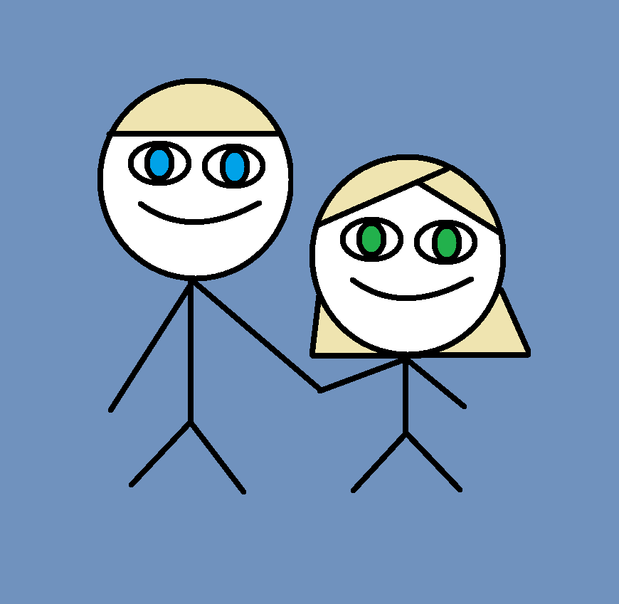

2. Administrative detaljer
- Klientenes navn: Magnus og Monica
- Kontaktperson: Monica Darvik
Våre klienter, Magnus og Monica, skal gifte seg i april og ha bryllupsfest i juni. De trenger en nettside for å gjøre info om bryllupet lett tilgjengelig for deres gjester.
3. Hensikt, mål og målgruppe
Nettsidens hensikt er å informere målgruppen, bryllupsgjestene, om bryllupet. Det skal være mulig å få info om paret, praktisk info om vielsen/festen, parets ønskeliste og kontaktinfo til paret, toastmaster og oss. Nettsidens målgruppe er bryllupsgjestene. Ettersom målgruppens erfaringer med pc og internett varierer i stor grad, er målet med nettsiden å gjøre all informasjon vedrørende bryllupet lett tilgjengelig og oversiktlig.
4. Navigasjonsstruktur
Navigasjonsstrukturen vi bruker er "clique" der alle tilgjengelige sider er koblet til hverandre. Vi skal bruke en navigasjonsbar med drop-down-meny for å løse dette. På enhver side er navigasjonsbaren alltid synlig slik at man kan nå alle de andre sidene, til og med forsiden. Vi velger å bruke denne strukturen fordi vi mener den gir brukeren en god oversikt og muligheten til å raskt (få klikk) kunne navigere seg rundt på siden. Denne strukturen passer godt til nettsiden vår ettersom den bare består av 8-10 sider.
5. Layout og utseende
Describe how these universal design decisions fulfill certain goals of the website and its audience. Vil ha en enkel og stilren nettside. Designet skal være enkelt for å gjenspeile kundens ønske om å ha en brukervennlig nettside. Designet skal også være romantisk og avslappet for å gi gjestene et intrykk av at bryllupsdagen skal være en hyggelig dag for både paret og gjestene. Kunden hadde ikke noen spesifikke krav til farge, font og logo, så disse er valgt slik at de passer forsidebildet vi har fått av kunden.
- Font: Geneva 12 px til generell tekst. Satisfy 26 px til kundenes navn på forsiden og Cookie til navigasjonsbar (16px), dropdownmeny (14 px), dato på forside (14 px) og overskrift (26px) .
- Farger
- Tekst: svart eller mørk brun
- Bakgrunn og navigasjonsbar: hvit/lys beige/off-white
- Linker: trenger farge til hover, visited. Har vi egentlig noen linker?
- Navigasjonsbar: Er plassert horisontalt på toppen av siden, men under borden. Når man skroller nedover skal borden forsvinne og nav-baren stå igjen på toppen av siden. Navigasjonsbaren skal alltid være synlig på toppen av siden. Når musepekeren peker på en fane, skal teksten bytte farge til blålilla (samme som forglemmegeien). Hvis fanen har noen undersider skal en dropdown-meny vises. Når musepekeren peker på en fane i dropdown-menyen, skal bakgrunnen bytte farge til blålilla og fonten bli hvit. Navigasjonsbaren og dropdown-menyene skal ha samme farge som bakgrunnen
- Logo: Logoen skal være en liten forglemmegei, som vi tegner selv, som er plasset midt på nav-baren. Den fungerer som en hjemknapp.
- Fotnote: "Laget av M. Do, K. Duong, C. Tørklep, A. Vuong i emnet IT2805 ved NTNU."

6. Innhold
Vår nettside skal bestå av følgende sider: For every page, you will need to give a text description of the content of the page as well as an image of the mockup of the page. The text describes what goal(s) this page fulfills, and how design decisions specific to it contribute into fulfilling such goals. Finally you should describe the design decisions that are unique for this particular page (if any).
index.html
Hjem-siden skal være minimal og bare bestå av nav-bar, forsidebilde og dato og sted for bryllupet for å gi gjestene et inntrykk av en ryddig side, som samtidig er informativ nok. Kunden ønsket at datoen for bryllupet bare skulle bestå av måned og år slik at fremmede ikke dukker opp på deres store dag. Når man har beveger musepekeren over datoen for bryllupet skal en nedteller ta over plassen til datoen. Denne nedtelleren skal si hvor mange måneder det er igjen til bryllupet og skal ha samme fonttype og størrelse som datoen, men i en annen nyanse.var_historie.html
Denne siden skal bestå av en tidslinje med noen få utvalgte datoer, bilder, og hendelser som er viktige for brudeparet. Dette er for at gjestene skal kunne føle seg litt involvert og dermed mer velkomne til brudeparets bryllup. Tidslinjen skal være vertikal og midstilt og hendelsene hendelsene skal ordnes i omvendt kronologisk rekkefølge. Hendelsene skal plasseres annen hver gang på begge sider av tidlinjen for å bruke mindre plass uten å få siden til å se rotete ut.vielse.html
Denne siden skal inneholde et kort program for den store dagen, adressen til kirken og en veibeskrivelse for hvordan man kommer dit med bil eller kollektiv transport. Kunden ønsker å ha denne løsningen ettersom slikt informasjon ikke får plass i innbydelsen. Adressen skal vises i en boks til høyre for at gjestene raskt skal kunne finne adressen. Nederst vises adressen i Google Maps. Vi velger å bruke Google Maps fremfor et statisk kart fordi Google gjør det mulig å finne veibeskrivelse til kirkens adresse. Vi kommer til å vise tidspunkt for vielsen hvis kunden godtar dette.bryllupsfest.html
Denne siden skal inneholde et kort program for festen, adressen til festlokalet og en veibeskrivelse for hvordan man kommer dit med bil eller kollektiv transport. Kunden ønsker å ha denne løsningen ettersom slikt informasjon ikke får plass i innbydelsen. Adressen skal vises i en boks til høyre for at gjestene raskt skal kunne finne adressen. Nederst vises adressen i Google Maps. Vi velger å bruke Google Maps fremfor et statisk kart fordi Google gjør det mulig å finne veibeskrivelse til festlokalets adresse. Vi kommer til å vise tidspunkt for vielsen hvis kunden godtar dette.meny.html
Enkel side med menyen for bryllupsfesten. Det skal være mulighet for gjestene å se hvilke allergener som finnes i hver rett. Under RSVP kan gjestene deretter si i fra om hva de er allergiske mot slik at brudeparet skal kunne tilpasse maten best mulig.onskeliste.html
rsvp.html
toastmaster.html
Enkel side med kort info om hvem man kontakter (navn, tlf, e-post) hvis man vil holde tale i bryllupet. Slik vil kunden ha det for å kunne selv kunne vite hvor mye tid de må sette av til taler.kontakt_oss.html
Enkel side med telefonnummer og e-postadresse til brudeparet i tilfelle gjestene lurer på noe mer.
7. Minimumskrav
The website must include four distinct JavaScript applications (for example, rollovers effects on images or menus, user-defined functions, form validation, animations etc.). The four applications must all be different from each other. Clearly indicate how each of you will be fulfilling these minimum requirements. Please note that each of these items must be constructed entirely by you and not copied from external websites on the Web (though you can modify code from our class materials). Once you fulfill the minimum requirements with your own code, you are allowed to get code from the web (with source attribution) to incorporate certain advanced components (e.g. image galleries with transitions), but they will not count as part of the minimum requirements.
8. Plan
Fil struktur
html-filer
- index.html
- var_historie.html
praktisk_info- vielse.html
- bryllupsfest.html
- meny.html
- onskeliste.html
- rsvp.html
- toastmaster.html
- kontakt_oss.html
img/
- forside_bilde.jpg
- hjemme_ikon.png
- favicon.svg
- bord.png
- tidslinje1.png
- tidslinje2.png
- tidslinje3.png (...)
skript/
- countdown.js
- drop_down_meny.js
- form_validering.js
- insert_data.js
mod/
- meny_nav_bar.part
css/
- style.css
Arbeidsfordeling og frister
| Filnavn | Beskrivelse | Ansvarlig | Frist |
|---|---|---|---|
| index.html | Forside | Minh Ha | 16.10.2016 |
| var_historie.html | Tidslinje | Kim | 23.10.2016 |
| Knapp som har drop down meny (java) | |||
| vielse.html | Google maps + info | Minh Ha | 23.10.2016 |
| bryllupsfest.html | Google maps + info | Minh Ha | 23.10.2016 |
| meny.html | Innhold fra klienten | Catriona | 23.10.2016 |
| onskeliste.html | Innhold fra klienten | Catriona | 23.10.2016 |
| rsvp.html | Svar skjema | Au-Dung | 23.10.2016 |
| toastmaster.html | Hvordan kontakte toastmaster | Kim | 16.10.2016 |
| kontakt_oss.html | Kontakt info til Magnus og Monica | Au Dung | 16.10.2016 |
| hjemme_ikon.svg/png | Tegne ikon, forglemmegei evt flere til andre sider | Catriona | 16.10.2016 |
| favicon.svg/png | Tegne ikon, forglemmegei | Catriona | 16.10.2016 |
| bord.png | Tegne bord, vines/blonder/forglemmegei | Catriona | 16.10.2016 |
| countdown.js | Månedsnedteller | Minh Ha | 06.11.2016 |
| drop_down_meny.js | Praktisk info drop down meny når man hovrer over | Kim | 06.11.2016 |
| form_validering.js | Sjekke det man skriver inn i RSVP er riktig | Catriona | 06.11.2016 |
| insert_data.js | Sette inn data fra RSVP data i google spreadsheet | Au-Dung | 06.11.2016 |
| meny_nav_bar.part | Hver side har samme navigasjonsbar | Alle | 06.11.2016 |
| style.css | Alle | 09.11.2016 | |
| Siste sjekk | Alle | 11.11.2016 |